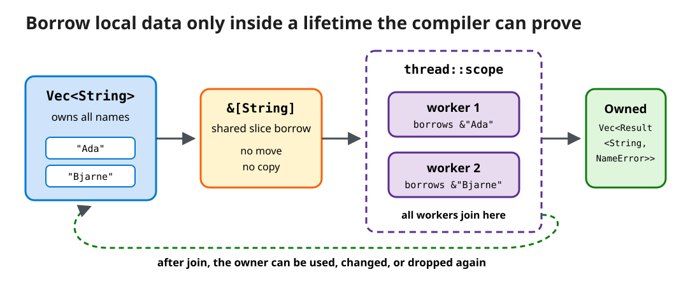

Ownership, Explicit Errors, and Safe Concurrency
Extend rust-greeter from one owned string to a batch pipeline whose borrows, expected failures, and worker lifetimes are checked at compile time.
Result; transform collections with iterators; and explain why scoped threads cannot outlive the data they borrow.
Starting state: the completed Lesson 4 rust-greeter package — the Lesson 1 CLI (Cargo.toml with the clap dependency; src/main.rs with use clap::Parser, struct Args, fn greeting, fn main, and the tests module) as extended by Lessons 2–4 with additional value types, structs and enums, and control-flow and macro-based helpers. Working directory: cd path/to/rust-greeter — replace path/to with the parent folder you used in Lesson 1; every command in this lesson runs from that package root. Default file: unqualified code snippets target src/main.rs; each one below states whether it replaces existing code, is inserted at a named location, or is an illustrative excerpt that is not added to the file.
30-minute core path
| Time | Activity |
|---|---|
| 6 min | Trace ownership, moves, and borrows through the existing CLI |
| 7 min | Decode enums, Result, Box, trait objects, and ? |
| 5 min | Build a lazy iterator pipeline for file input |
| 9 min | Implement a scoped-thread batch greeter with a line-by-line syntax guide |
| 2 min | Knowledge check: diagnose four compiler-guided design choices |
| 1 min | Recap with Rust-to-C++ decision rules |
Part 1: ownership is RAII plus enforced aliasing
C++ RAII and Rust ownership share deterministic cleanup. Rust adds a static rule: every value has one owner, and assigning or passing an owning value usually moves it. A moved value cannot be used. Borrowing temporarily grants access without transferring cleanup responsibility.
Illustrative excerpt — not added to rust-greeter. These lines are a standalone fragment for reading, not a complete file; if you want to run them, paste them inside a scratch fn main() { ... } and revert afterward.
let owned = String::from("Ferris");
let moved = owned;
// println!("{owned}"); // compile error: value was moved
let len = moved.len(); // short shared borrow
let view: &str = &moved; // shared borrow
println!("{view}: {len}"); // owner remains `moved`| Sample syntax | What Rust is doing | C++ bridge |
|---|---|---|
String::from("Ferris") | Calls an associated function using :: and creates an owned, growable UTF-8 string. | Think std::string{"Ferris"}; Rust's String owns its heap buffer. |
let moved = owned; | Transfers ownership. It normally copies only the small stack representation, not the heap text, and disables later use of owned. | Similar intent to moving a std::unique_ptr, but enforced for all non-Copy values. |
moved.len() | Calls a method that borrows moved briefly. Method-call syntax inserts the needed reference automatically. | Comparable to a const member function call. |
&str | A borrowed view containing a pointer and byte length. Its lifetime cannot exceed the string data it views. | Closest to std::string_view, with compiler-checked lifetime and aliasing rules. |
| Function parameter | Promise | Use it when |
|---|---|---|
name: String | The callee takes ownership and decides when it is dropped or moved again. | The callee must retain, transform, or transfer the allocation. |
name: &str | The callee reads a string view for no longer than the borrow. | Reading is enough; prefer this flexible API for greeting. |
name: &mut String | The callee has exclusive access for the borrow. | In-place mutation is part of the function's contract. |

Vec<String> can be dropped or mutated.Download the editable Excalidraw source.
Part 2: make expected failure a value
Rust separates unrecoverable bugs, represented by a panic, from expected failure, represented by Result<T, E>. Both success and failure are enum variants, so callers must handle or propagate them.
File: src/main.rs — add below the existing greeting function from Lesson 1:
#[derive(Debug)]
enum NameError {
Empty,
TooLong(usize),
}
fn validate_name(raw: &str) -> Result<&str, NameError> {
let name = raw.trim();
match name.len() {
0 => Err(NameError::Empty),
n if n > 40 => Err(NameError::TooLong(n)),
_ => Ok(name),
}
}| Rust syntax | Meaning for a C++ programmer |
|---|---|
enum NameError | A tagged union, closer to std::variant than a C-style integer enum. Each variant can carry different data. |
#[derive(Debug)] | Generates a standard debug-formatting implementation so the error can be printed by tools and assertions. |
TooLong(usize) | A variant carrying the measured length. usize is the platform-sized unsigned integer Rust uses for collection sizes and indices. |
Result<&str, NameError> | A generic enum with exactly two variants: Ok(&str) or Err(NameError). It serves the role of std::expected<string_view, NameError>. |
match | Pattern-matches and must cover every possible variant or value. Adding an error variant reveals incomplete handlers at compile time. |
n if n > 40 | Binds the matched length to n, then applies an extra guard condition. |
_ => Ok(name) | The underscore is a wildcard for every remaining length; => separates a pattern from its result expression. |
File I/O also returns Result. The ? operator returns early only on Err; otherwise it unwraps the success value.
File: src/main.rs — add below validate_name. The use std::{...} line is a new, separate import; it does not replace the existing use clap::Parser; line:
use std::{error::Error, fs, path::Path};
fn load_names(path: &Path) -> Result<Vec<String>, Box<dyn Error>> {
let text = fs::read_to_string(path)?;
Ok(text.lines().map(str::trim).map(str::to_owned).collect())
}Box<dyn Error> one piece at a time
Box<T> is an owning smart pointer: it stores a T on the heap, owns that value exclusively, and destroys it automatically when the box leaves scope. Its closest C++ bridge is std::unique_ptr<T>, although Rust uses Box as a normal value type rather than exposing manual deletion.
Error is a trait, similar to an abstract interface. dyn Error means “some concrete error type that implements Error, chosen at runtime.” Combining them, Box<dyn Error> owns an error whose exact concrete type the function does not name. Calls are dynamically dispatched through the trait object.
Why use it here? fs::read_to_string can produce std::io::Error, while later edits might add other error types. The function still needs one fixed error type in its signature, so the box erases the concrete distinction at this application boundary. It boxes only an error on the failure path; the successful Vec<String> is unaffected.
The ? line is shorthand for the same control flow as this explicit match. Both sides are illustrative only — the "Concise propagation" line is the same fs::read_to_string(path)?; statement already inside load_names above; the "Conceptual expansion" is what it desugars to and is not added to the file.
let text =
fs::read_to_string(path)?;let text = match fs::read_to_string(path) {
Ok(value) => value,
Err(error) => return Err(error.into()),
};error.into() converts the concrete I/O error into the declared boxed error type. In a reusable library, prefer a domain-specific error enum so callers can inspect individual cases without relying on dynamic type erasure.
Part 3: iterators describe transformations
text.lines() creates a lazy iterator over borrowed &str slices. map composes transformations, and collect chooses the owned destination. Unlike an index loop, there is no unchecked position to advance incorrectly. The comparison below is illustrative — it walks through the single collect() expression already inside load_names above; there is nothing new to add to src/main.rs.
text.lines()
.map(str::trim)
.map(str::to_owned)
.collect::<Vec<String>>()&str input
→ borrowed line &str
→ borrowed trimmed &str
→ owned String
→ owned Vec<String>| Pipeline step | What it contributes |
|---|---|
text.lines() | Creates an iterator over borrowed lines. No vector is created yet. |
.map(str::trim) | Passes the function str::trim as the transformation. It is equivalent to the closure .map(|line| line.trim()). |
.map(str::to_owned) | Copies each borrowed slice into an owned String. This is necessary because the local text string is dropped when load_names returns. |
.collect::<Vec<String>>() | Runs the lazy pipeline and gathers values into a vector. The ::<...> “turbofish” explicitly supplies the generic output type. |
Iterator adapters are zero-cost abstractions in the usual Rust sense: they are generic and optimized with the surrounding code, without requiring a runtime iterator object.
Part 4: exercise—parallelize borrowed work safely
File: src/main.rs — replace two existing items with the block below: (1) the use std::{error::Error, fs, path::Path}; line added earlier in this lesson, and (2) the current struct Args block (last updated in Lesson 4, which added the style field). The new grouped import folds in the earlier one plus PathBuf and thread; the new Args keeps name, count, and style exactly as Lesson 4 left them and adds one new field, file.
use std::{
error::Error,
fs,
path::{Path, PathBuf},
thread,
};
#[derive(Parser)]
#[command(version, about = "A small Rust greeting CLI")]
struct Args {
#[arg(short, long, default_value = "world")]
name: String,
#[arg(long)]
file: Option<PathBuf>,
#[arg(short, long, default_value_t = 1)]
count: u8,
#[arg(long, value_enum, default_value_t = GreetingStyle::Casual)]
style: GreetingStyle,
}| New syntax | Meaning |
|---|---|
use std::{...} | A grouped import. The braces avoid repeating the std:: prefix; they do not create an object. |
Path / PathBuf | Path is a borrowed path view; PathBuf is an owned, growable path. They parallel str / String. |
Option<PathBuf> | An enum that is either Some(path) or None. It represents an optional value without a null pointer. |
#[derive(Parser)] | Unchanged since Lesson 4 — still the same derive introduced in Lesson 1. Only the field list below is edited; style: GreetingStyle keeps its Lesson 4 attribute untouched. |
Keep greeting, NameError, validate_name, and load_names from above unchanged, along with GreetingStyle and shout_line from Lesson 4 — render_all below reuses shout_line so the batch path keeps honoring --style.
File: src/main.rs — add a new function below load_names that borrows the owned vector through a slice and threads style through to Lesson 4's shout_line:
fn render_all(names: &[String], style: GreetingStyle) -> Vec<Result<String, NameError>> {
let should_shout = style == GreetingStyle::Formal;
thread::scope(|scope| {
let handles = names
.iter()
.map(|name| {
scope.spawn(move || {
validate_name(name)
.map(greeting)
.map(|text| shout_line(&text, should_shout))
})
})
.collect::<Vec<_>>();
handles
.into_iter()
.map(|handle| handle.join().expect("worker panicked"))
.collect()
})
}| Renderer syntax | How to read it |
|---|---|
style: GreetingStyle | A second parameter carrying the Lesson 4 style enum, so a caller decides how every name in the batch is rendered. |
style == GreetingStyle::Formal | GreetingStyle derives PartialEq (Lesson 4), so styles compare directly with ==; the result is computed once, outside the closures. |
&[String] | A borrowed slice over consecutive String values. The function can read the vector's elements but neither owns nor resizes the vector. |
|scope| { ... } | A closure—Rust's lambda syntax—with one parameter named scope. Closures may borrow or move values from their surrounding environment. |
names.iter() | Yields shared references, &String, so iteration does not consume the input names. |
.map(|name| ...) | Runs the following closure for each borrowed name and produces one new item per input. |
scope.spawn(move || ...) | Starts a scoped thread with a zero-parameter closure. move copies the closure-local name: &String reference and should_shout: bool into that worker; both types are Copy. The referenced string data remains borrowed from names, and thread::scope proves every worker finishes before that slice can disappear. |
validate_name(name).map(greeting).map(|text| shout_line(&text, should_shout)) | Calls greeting only for Ok, then reuses Lesson 4's shout_line to upcase the text when style is Formal; an existing Err passes through both map calls unchanged. |
Vec<_> | The underscore asks the compiler to infer the vector's element type—here, scoped join handles. |
join().expect(...) | join waits for a worker. expect deliberately panics only if the worker itself panicked, which this example treats as a program bug rather than invalid user input. |
Ordinary detached threads require captured borrows to be 'static, meaning valid for the program's remaining lifetime. thread::scope instead guarantees all workers join before the scope returns. The type system therefore proves that no worker can access names after its owner is gone.
File: src/main.rs — replace the current fn main (last replaced in Lesson 4) with the batch-aware version, which now passes args.style into render_all so the flag keeps working end to end:
fn main() -> Result<(), Box<dyn Error>> {
let args = Args::parse();
let names = match &args.file {
Some(path) => load_names(path)?,
None => vec![args.name],
};
for result in render_all(&names, args.style) {
match result {
Ok(message) => {
for _ in 0..args.count {
println!("{message}");
}
}
Err(NameError::Empty) => eprintln!("skipped an empty name"),
Err(NameError::TooLong(n)) => {
eprintln!("skipped a name with {n} bytes; maximum is 40")
}
}
}
Ok(())
}| Main-function syntax | Meaning |
|---|---|
Result<(), Box<dyn Error>> | Success carries (), Rust's zero-size “unit” value meaning no useful payload. Failure carries the boxed error interface explained above. |
match &args.file | Matches a borrow of the option, preserving the Args value for later use. |
Some(path) / None | Destructures the two Option cases. In the first arm, path becomes a borrowed path. |
vec![args.name] | A function-like macro that creates a one-element vector and moves the owned name into it. |
render_all(&names, args.style) | GreetingStyle derives Copy (Lesson 4), so passing args.style here copies it instead of moving it — args.count below can still read args freely, unlike args.name, which is moved into names above. |
match result | Handles every Result case and every NameError variant explicitly. |
eprintln! | Formats to standard error, keeping diagnostics separate from successful greeting output. |
Ok(()) | Returns successful completion with no payload. |
Active exercise: verify the style-aware batch pipeline
File: src/main.rs — add inside the existing #[cfg(test)] mod tests { ... } block, alongside the Lesson 1–4 tests. NameError only derives Debug, not PartialEq, so these tests use matches! instead of assert_eq! to check Result variants:
#[test]
fn validate_name_trims_and_rejects_bad_input() {
assert!(matches!(validate_name(" Ada "), Ok("Ada")));
assert!(matches!(validate_name(" "), Err(NameError::Empty)));
let long = "x".repeat(41);
assert!(matches!(validate_name(&long), Err(NameError::TooLong(41))));
}
#[test]
fn render_all_applies_style_and_skips_invalid_names() {
let names = vec![String::from("Ada"), String::from(" ")];
let casual = render_all(&names, GreetingStyle::Casual);
assert!(matches!(casual[0].as_deref(), Ok("Hello, Ada!")));
assert!(matches!(&casual[1], Err(NameError::Empty)));
let formal = render_all(&names, GreetingStyle::Formal);
assert!(matches!(formal[0].as_deref(), Ok("HELLO, ADA!")));
}Numbered steps to verify the batch pipeline, run from the rust-greeter package root:
- File:
names.txt(new, at the package root) — create it with three lines, including one blank line:printf "Ada\n\nBjarne\n" > names.txt # macOS # Windows PowerShell: "Ada`n`nBjarne" | Set-Content names.txt - Run
cargo fmt --check. Expected evidence: no output (already formatted). - Run
cargo test. Expected evidence:test result: ok. 15 passed— the 13 tests carried over from Lessons 1–4 plus the two new tests above. - Run
cargo run -- --file names.txt(default--style casual). Expected evidence:Hello, Ada!andHello, Bjarne!on stdout plus oneskipped an empty nameline on stderr. - Run
cargo run -- --file names.txt --style formal. Expected evidence: the sameskipped an empty nameline on stderr, butHELLO, ADA!andHELLO, BJARNE!(shouted) on stdout — proof that--style, carried forward from Lesson 4, still reaches every worker in the scoped batch pipeline.
Output order is deterministic here because handles are joined in input order, even though formatting work can overlap.
Workers cannot outlive the scope; no worker mutates the shared names; results own their output; every validation error variant is handled. The compiler does not prove that one thread per name is efficient—use a bounded pool for large inputs.
Optional videos
These videos are optional and excluded from the 30-minute core path.
Ownership [25 of 35]
Microsoft Developer (Microsoft Learn). Introduces ownership and memory safety without a garbage collector.
Borrowing [27 of 35]
Microsoft Developer (Microsoft Learn). Reinforces references that access values without taking ownership.
Text alternatives
- Instead of the ownership video, read What Is Ownership? in The Rust Programming Language.
- Instead of the borrowing video, read References and Borrowing.
Knowledge check
1. A function only reads a caller's string. Should it usually accept String, &str, or &mut String?
Answer: &str. It expresses read-only borrowed access, accepts both String slices and string literals, and avoids ownership transfer.
2. Why use Result for an empty name instead of panicking?
Answer: Invalid input is expected and recoverable. Returning Result lets the caller skip, report, retry, or terminate deliberately.
3. What does Box<dyn Error> own, and what does it not box here?
Answer: On a failure path it heap-owns one concrete error through the Error trait interface. It does not box the successful Vec<String>.
4. What safety property does thread::scope add to this exercise?
Answer: Every scoped worker is joined before the scope returns, so a worker may safely borrow local data that outlives the scope without requiring a 'static allocation.
Recap and decision rules
Need to retain it? Take or return ownership: T
Need only to read it? Borrow: &T or a slice such as &str
Need exclusive mutation? Borrow mutably: &mut T
Failure is expected? Return Result<T, E>
Value may be absent? Use Option<T>, then handle Some and None
Several error types meet? Box<dyn Error> can erase them at an app boundary
Cases form a closed set? Use an enum and exhaustive match
Transform a collection? Compose iterator adapters
Threads borrow local data? Bound them with thread::scopeYou extended the same application rather than learning isolated syntax. Ownership described resource responsibility, enums made failure states explicit, iterators carried borrows through a pipeline, and scoped threads tied concurrency to a lifetime the compiler could verify.
Sources
- Understanding Ownership, The Rust Programming Language, Rust Project. Ownership, moves, references, slices, and borrowing. Accessed September 16, 2026.
- The match Control Flow Construct, The Rust Programming Language, Rust Project. Exhaustive pattern matching over enums. Accessed September 16, 2026.
- Error Handling, The Rust Programming Language, Rust Project. Panics,
Result, and propagation. Accessed September 16, 2026. - Box, Rust standard library documentation, Rust Project. Heap allocation, ownership, and automatic destruction. Accessed September 17, 2026.
- Option, Rust standard library documentation, Rust Project. Explicit optional values with
SomeandNone. Accessed September 17, 2026. - Result, Rust standard library documentation, Rust Project. Success/failure variants, mapping, and
expect. Accessed September 17, 2026. - Closures, The Rust Programming Language, Rust Project. Lambda syntax and environment capture. Accessed September 17, 2026.
- Processing a Series of Items with Iterators, The Rust Programming Language, Rust Project. Lazy adapters and consuming collections. Accessed September 16, 2026.
- std::thread::scope, Rust standard library documentation, Rust Project. Scoped thread lifetimes and joining guarantees. Accessed September 16, 2026.
- Ownership [25 of 35], Microsoft Developer (Microsoft Learn), 1:48. Accessed September 16, 2026.
- Borrowing [27 of 35], Microsoft Developer (Microsoft Learn), 3:27. Accessed September 16, 2026.